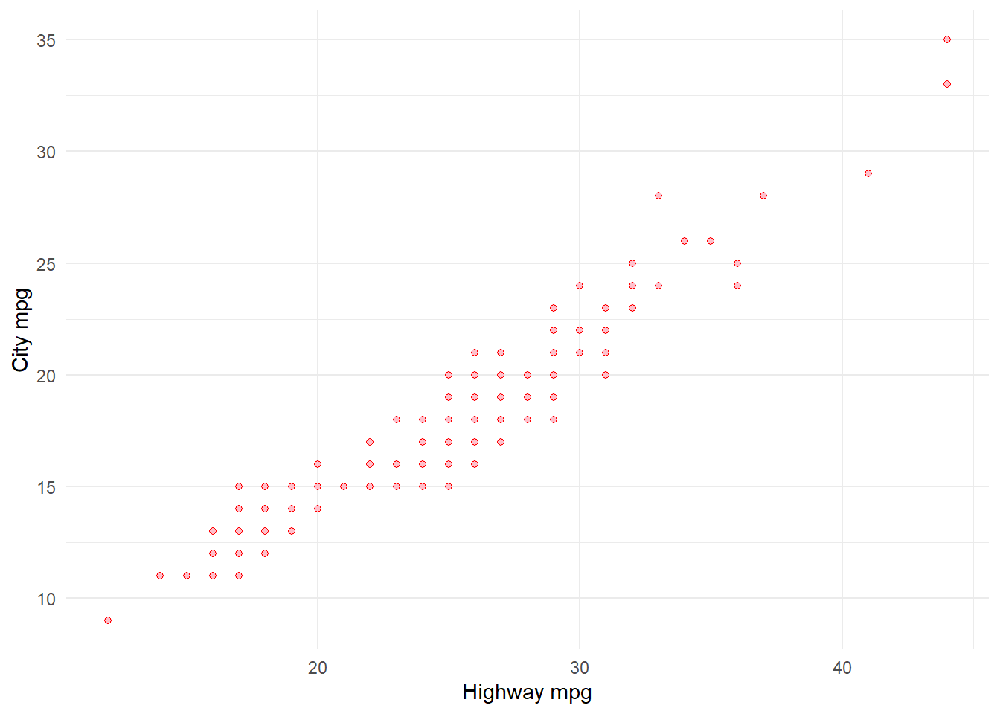

A boxplot shows the minimum, 1st quartile, median (2nd quartile), 3rd quartile, and maximim of a continuous variable. The default is to specify only y axis variable. In the example below, I will use hwy as the Y axis variable.
ggplot(mpg, aes(y = hwy)) +geom_boxplot()
The width of the boxplot has no meaning. It might be more interesting to compare hwy boxplots for different number of cylinders
In the code below, what happens if you don’t use “factor”?
Note how the X and Y axis titles are populated automatically from the variable names. As we are create a new reordered variable, the X axis title is not useful at all. We can fix this by using labs() function.
mpg %>%group_by(class) %>%summarize(count =n()) %>%ggplot(aes(x =reorder(class, count), y = count)) +geom_col() +labs(x ="Vehicle Class", y ="Count")
Furthermore, we need to add annotations to the bars. Otherwise, it is difficult to get the exact heights of the bars. For this we use geom_text()
mpg %>%group_by(class) %>%summarize(count =n()) %>%ggplot(aes(x =reorder(class, count), y = count)) +geom_col() +geom_text(aes(label = count)) +labs(x ="Vehicle Class", y ="Count")
Note that the aes() inside geom_text() inherits x and y aesthetics from ggplot(). Thus, it needs only one additional argument label which specifies what we want to show on the bars.
The text shows up half inside the bar and half outside. You can adjust that in multiple ways. One easy way is to specify the Y aesthetic in geom_text() so that you can adjust the exact height where the text shows up. For example, if you want all the annotations show up exactly at Y = 50:
mpg %>%group_by(class) %>%summarize(count =n()) %>%ggplot(aes(x =reorder(class, count), y = count)) +geom_col() +geom_text(aes(label = count, y =50)) +labs(x ="Vehicle Class", y ="Count")
This doesn’t look nice. Let’s change it to a value slightly higher than count
mpg %>%group_by(class) %>%summarize(count =n()) %>%ggplot(aes(x =reorder(class, count), y = count)) +geom_col() +geom_text(aes(label = count, y = count +2)) +labs(x ="Vehicle Class", y ="Count")
We could also place it inside the bars. But for this, we should change the font color to a lighter shade.
mpg %>%group_by(class) %>%summarize(count =n()) %>%ggplot(aes(x =reorder(class, count), y = count)) +geom_col() +geom_text(aes(label = count, y = count -2), color ="white") +labs(x ="Vehicle Class", y ="Count")
Note how I wrote color outside aes() function. What if we wrote it inside?
mpg %>%group_by(class) %>%summarize(count =n()) %>%ggplot(aes(x =reorder(class, count), y = count)) +geom_col() +geom_text(aes(label = count, y = count -2, color ="white")) +labs(x ="Vehicle Class", y ="Count")
What’s going on?
Add title, subtitle, and caption
mpg %>%group_by(class) %>%summarize(count =n()) %>%ggplot(aes(x =reorder(class, count), y = count)) +geom_col() +geom_text(aes(label = count, y = count -2), color ="white") +labs(x ="Vehicle Class", y ="Count",title ="SUVs dominate the sample",subtitle ="Only a handful of minivans and 2-seaters are in the sample",caption ="This dataset contains a subset of the fuel economy data that the EPA makes available on https://fueleconomy.gov/.")
Bivariate plots
Bivariate plots show the relationship between two variables in the data.
Scatterplot
Scatteroplots allow one to plot the relationship between two continuous variables.
ggplot(mpg, aes(x = hwy, y = cty)) +geom_point() +labs(x ="Highway mpg", y ="City mpg")
You can change the properties of the points
ggplot(mpg, aes(x = hwy, y = cty)) +geom_point(color ="blue") +labs(x ="Highway mpg", y ="City mpg")
ggplot(mpg, aes(x = hwy, y = cty)) +geom_point(shape =21, color ="red", fill ="pink") +labs(x ="Highway mpg", y ="City mpg")

You can overlay a linear regression line by using geom_smooth()
ggplot(mpg, aes(x = hwy, y = cty)) +geom_point(shape =21, color ="red", fill ="pink") +geom_smooth(method ="lm") +labs(x ="Highway mpg", y ="City mpg")
`geom_smooth()` using formula = 'y ~ x'
The gray ribbon around the blue line shows the confidence interval. You can turn it off by specifying se = FALSE
ggplot(mpg, aes(x = hwy, y = cty)) +geom_point(shape =21, color ="red", fill ="pink") +geom_smooth(method ="lm", se =FALSE) +labs(x ="Highway mpg", y ="City mpg")
`geom_smooth()` using formula = 'y ~ x'
If you change the order of geom_point() and geom_smooth() they are layered differently:
ggplot(mpg, aes(x = hwy, y = cty)) +geom_smooth(method ="lm", se =FALSE) +geom_point(shape =21, color ="red", fill ="pink") +labs(x ="Highway mpg", y ="City mpg")
`geom_smooth()` using formula = 'y ~ x'
Line graph
A line graph shows a continuous variable on the Y axis plotted against a temporal variable on the X axis. Thus, you can plot dates, years, months, hours, etc. on the X axis.
Unfortunately, mpg doesn’t have a time series variable. So, we will use another data set that comes bundled with ggplot2 called economics.